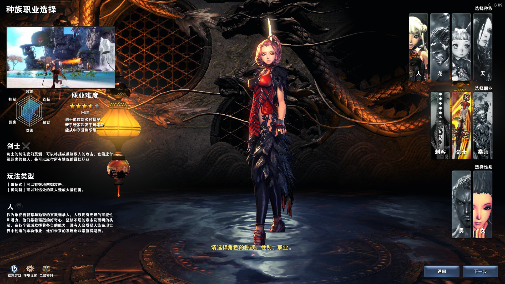
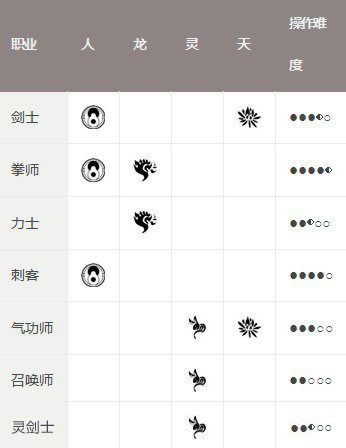
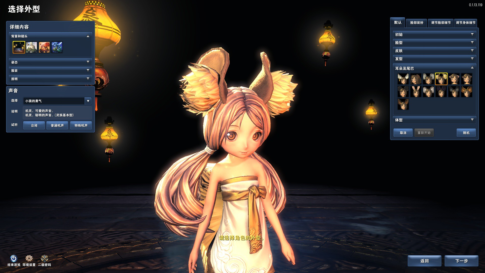
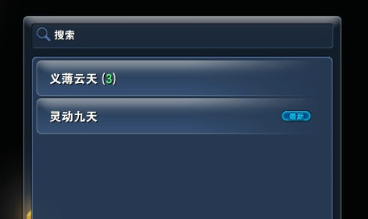
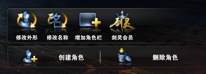
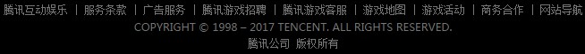

游戏下载 丨
点卷充值 丨
>返回官网首页
创建角色
创建角色时可以选择角色的种族、职业和性别，自定义角色外形，创建属于自己的个性角色
选择种族和职业

剑灵中有人、龙、灵、天4个种族，各种族可以选择的职业各不相同，一共有6种职业。 参考画面左侧的解说，选择适合自己的种族和职业。

设定角色外形

确定了种族、职业和性别后，就可以对角色的外形进行设定了。
一共有默认、脸部装扮、调节脸部细节和调节身体细节四大部分，每一部分有眼鼻嘴、脸型、下巴、身高、体形等诸多细节可以设定。可以以默认的形象为基础，勾勒出属于自己独一无二的游戏形象。
选择服务器

角色外形设定完毕后，可以设定角色名字并选择想要进行游戏的服务器。
角色名字由中文、英文和数字组成，在所在大区的所有服务器中是唯一的。
想和朋友一起玩的话，就必须和朋友选择同一个服务器。
修改角色外形与增加角色栏

游戏的进行过程中，如果对角色的外形不满意，可以在游戏商城中购买形象重置券，然后返回选择角色界面，选择角色并重新设置形象。
如果已经占用全部5个角色栏，可以在游戏商城中购买角色扩展券，然后返回选择角色界面，进行增加角色栏的操作。
